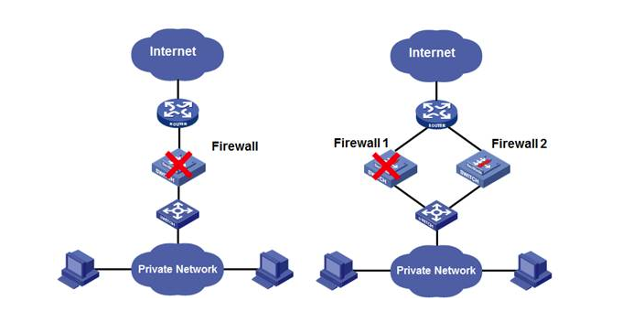
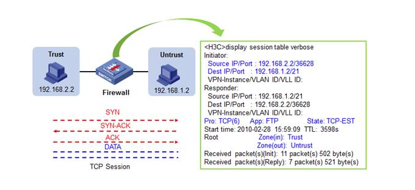
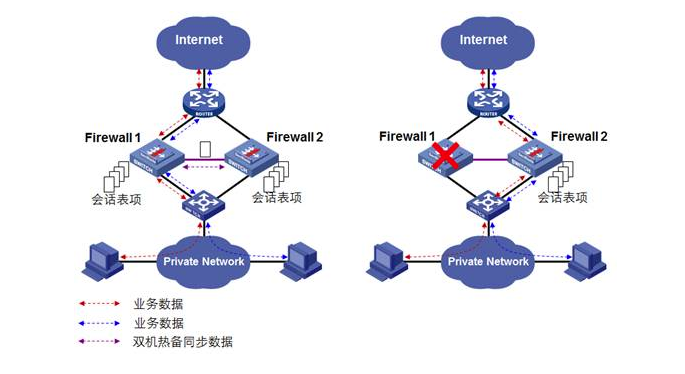
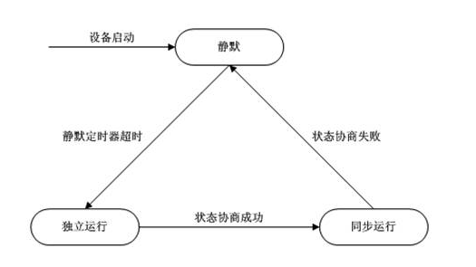
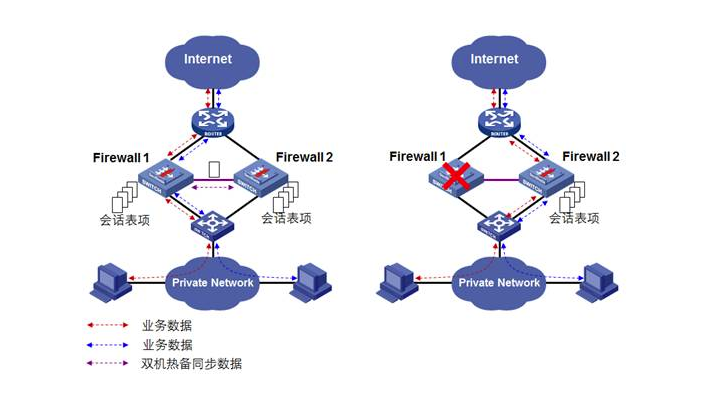
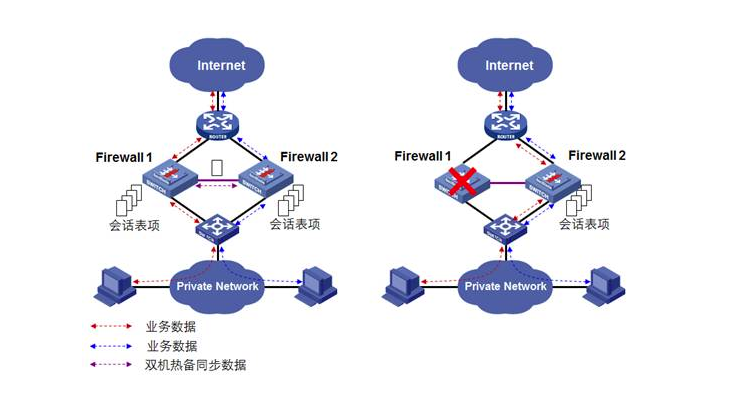
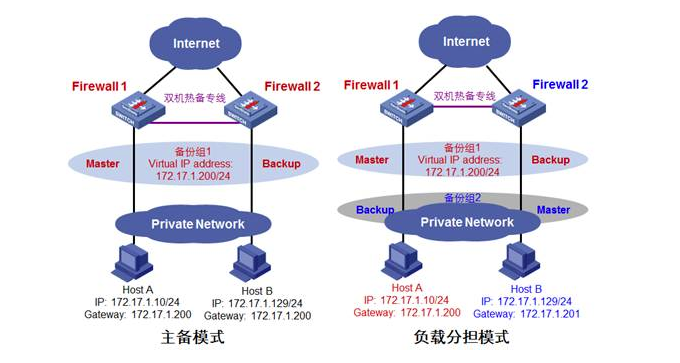
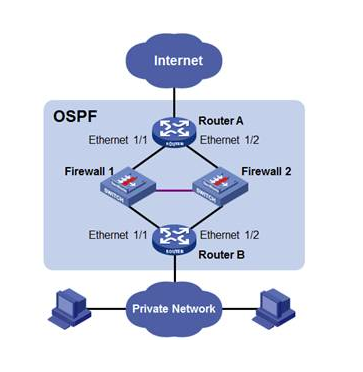
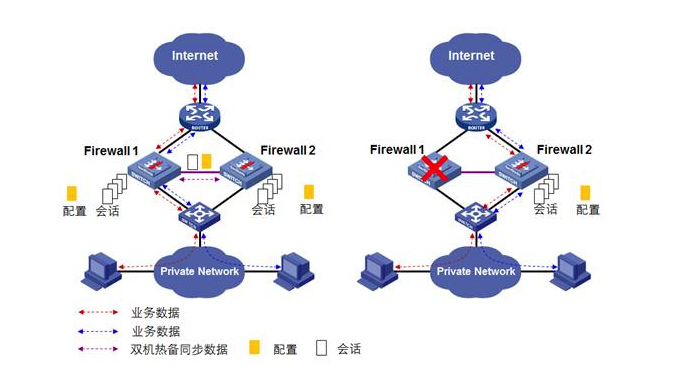

防火墙技术最高境界-双机热备
随着互联网技术的不断发展，越来越多的业务被迁移到互联网上，移动办公、网上购物、即时通讯、互联网金融、互联网教育等业务蓬勃发展，由于互联网承载的业务越来越多，越来越重要，所以对网络的可靠性提出了更高的要求，如何保证网络的不间断传输成为急需解决的一个问题。
1、防火墙双机热备技术简介
防火墙作为网络基础架构的重要产品，其可靠性要求不言而喻。如下面左图所示，防火墙作为内外网的接入点，当设备出现故障便会导致内外网之间的业务的全部中断。在这种网络关键位置上如果只使用一台设备的话，无论其可靠性多高，都必然要承受因单点故障而导致网络中断的风险。于是，人们在网络架构设计的时候，通常会在网络的关键点部署两台或多台设备，并且通过VRRP或动态路由等机制实现网络的备份。

如果是传统的网络转发设备或者普通的包过滤防火墙，只需要做好路由的备份就可以保证业务的可靠性，因为普通的路由器、交换机或者包过滤防火墙不会记录报文的交互状态和应用层信息，仅仅根据报文的二层或者三层信息进行过滤，然后再根据路由进行转发，所以只要两台设备策略配置一致，路由上做好冗余备份，其中任何一台设备出现故障业务都能快速切换到另一台设备，业务切换的时间也基本就是路由收敛的时间。但是当接入点是状态防火墙时，情况就不一样了，状态防火墙是基于连接状态的，当用户第一次发起连接时，状态防火墙会对数据交互的过程以及报文的网络层信息进行检查，如果报文是允许的，就建立一个会话表项，记录报文的源IP、源端口、目的IP、目的端口、协议以及地址转换等信息，后续报文只有匹配会话才能够通过防火墙并且完成信息的转换。如果主用设备发生故障流量切换到备用设备，即使路由转发正确报文也有可能因为找不到正确的会话表项而被丢弃，从而导致业务中断，例如图中从Untrust返回到Trust的这部分流量。当然如果流量切换后防火墙策略是允许的，报文也可以正常转发，只是设备需要耗费一定的时间重新查找策略并建立会话，影响业务切换的时间，比如图中Trust主动发起到Untrust的流量。因此，对于状态防火墙，为了保证业务的可靠性或者提高业务的切换时间，除了在转发层面做好路由备份外，还必须在安全控制层面做好会话等关键信息的备份。

2、如何解决防火墙会话备份的问题呢？
答案就是双机热备技术。互为备份的两台设备会通过备份链路定时向另一台设备发送状态协商报文，协商进入同步状态后开始备份对端设备上的会话、ALG表项和黑名单等重要信息，进入同步状态后某段时间中两台设备上的业务状态是一致的。当其中一台设备发生故障时，在转发层面利用VRRP或动态路由（例如OSPF）机制将业务流量切换到另一台设备，由于另一台设备已经备份了故障设备上的会话等信息，业务数据流便可以从另一台设备上直接通过，从而在很大程度上避免了网络业务的中断。

3、防火墙双机热备技术
防火墙双机热备状态有静默、独立运行和同步运行三种：
1、静默：表示设备刚启动正在等待系统稳定，或者热备状态正在从同步运行向独立运行转换的中间状态。
2、独立运行：表示静默定时器超时，但是设备没有与任何其它设备建立备份连接。
3、同步运行：表示设备与对端设备状态协商成功，数据备份完成，状态已经同步。

防火墙双机热备同步数据的方式有两种：批量备份和实时备份
1、批量备份：防火墙工作了一段时间后，可能已经存在大量的会话表项，此时加入另一台防火墙，在两台设备上使能双机热备功能后，先运行的防火墙会将已有的会话表项一次性同步到新加入的设备，这个过程称为批量备份。
2、实时备份：两台防火墙在同步运行过程中，可能会产生新的会话表项。为了保证表项的完全一致，防火墙在产生新表项或表项变化后会及时备份到另一台设备，这个过程称为实时备份
另外有一点需要注意：会话备份的设备不区分主备，互为备份的两台设备都可以将自己的会话同步到对方。
４、双机热备工作模式
双机热备解决方案根据组网情况有两种工作模式：主备模式和负载分担模式。在这两种模式中，设备的角色根据是否承担流量来决定，有流量经过的设备即为主设备，无流量经过的设备即为备份设备。
主备模式下的两台防火墙，其中一台作为主设备，另一台作为备份设备。主设备处理所有业务，并将产生的会话信息传送到备份设备进行备份；备份设备不处理业务，只用做备份（如下图所示，Firewall 1处理全部业务，Firewall 2用做备份）。当主设备故障，备份设备接替主设备处理业务，从而保证新发起的会话能正常建立，当前正在进行的会话也不会中断。

负载分担模式下，两台设备均为主设备，都处理业务流量，同时又作为另一台设备的备份设备，备份对端的会话信息（如下图所示，Firewall 1和Firewall 2均处理业务，互为备份）。当其中一台故障后，另一台设备负责处理全部业务，从而保证新发起的会话能正常建立，当前正在进行的会话也不会中断

5、双机热备流量切换方式
双机热备中互为备份的两台防火墙只负责会话信息备份，保证流量切换后会话连接不中断。而流量的切换则依靠传统备份技术来实现，应用灵活，能适应各种组网环境。H3C防火墙可以采用VRRP或者路由的方式来进行流量的备份和切换。
通过VRRP将局域网中的一组设备配置成一个备份组，这组设备在功能上就相当于一台虚拟设备。局域网内的主机只需要知道这个虚拟设备的IP地址，通过这个虚拟设备与其它网络进行通信。备份组中，仅有一台设备处于活动状态，能够转发报文，称为主用设备（Master），其余设备都处于备份状态，并随时按照优先级高低做好接替任务的准备，称为备份设备（Backup）。当发现主用设备故障时，优先级次高的备用设备会当选为新的Master接替原Master工作，整个过程对用户来说是完全透明的，这就很好的实现了流量切换。创建一个VRRP组可以实现业务主备，如果创建两个VRRP组，Master分布在两台设备上可以实现流量的负载分担。

如果网络中不同网段的两台设备A到B之间有多条通路，动态路由协议会使用算法选取最优的一条路径作为A到B的路由。当这条通路故障，路由协议会从剩余的可用通路中选择最优的一条作为新的路由，如果故障路由恢复，则又会重新启用原路由，从而动态的保证A与B之间的连通。另外，通过调整cost值形成等价路由，可以实现两台防火墙的负载分担。

6、双机热备配置同步
防火墙双机热备技术很好的解决了网络单点故障的问题，提高了网络的可靠性。从这个组网上看，两台防火墙所处的网络位置一样，部署的功能一样，所以他们的很多是相同的，比如安全区域，域间策略、攻击防范策略等，所以为了简化设备的配置工作量，防火墙双机热备在会话同步的基础上增加了一个配置同步的功能，通过这个功能用户可以只在一台防火墙上下发配置，然后这些配置会自动同步到另一台防火墙上，极大的简化了网络的部署工作。需要注意的是尽管两台防火墙的部署位置一样，但是并非所有配置全部相同，比如接口IP地址，VRRP的优先级，OSPF的cost值等等，所以配置同步功能也不是所有配置都同步，目前防火墙主要同步一些安全特性相关的配置，比如域间策略，NAT，攻击防范，VPN，内容过滤等模块的配置。
